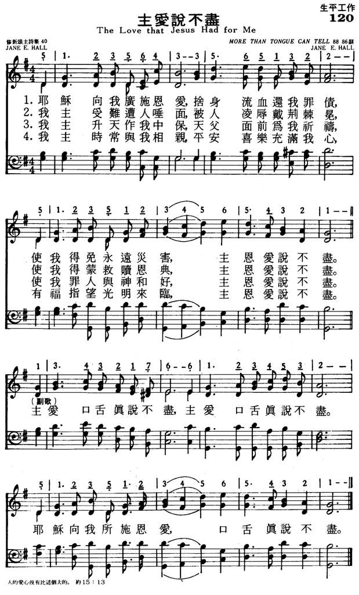
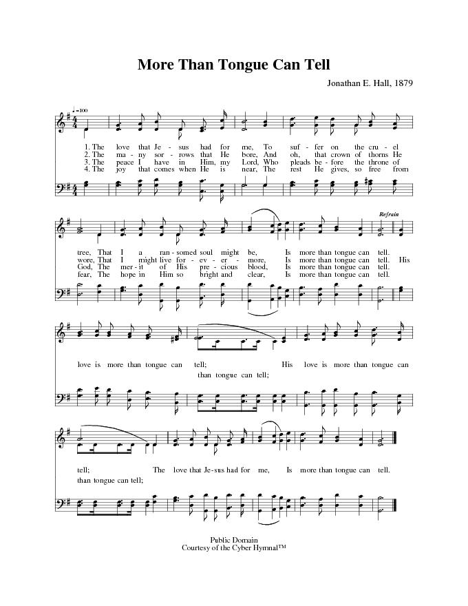

|
|
|
|
The love that Jesus had for me, |
120主爱说不尽
1.耶稣向我广施恩爱，舍身流血还我罪债，
使我得免永远灾害，主恩爱说不尽。 主爱口舌真说不尽，主爱口舌真说不尽。 耶稣向我所施恩爱，口舌真说不尽。 2.我主受难遭人唾面，被人凌辱戴荆棘冕， 使我得蒙救赎恩典，主恩爱说不尽。 主爱口舌真说不尽，主爱口舌真说不尽。 耶稣向我所施恩爱，口舌真说不尽。 3.我主升天作我中保，天父面前为我祈祷， 使我罪人与神和好，主恩爱说不尽。 主爱口舌真说不尽，主爱口舌真说不尽。 耶稣向我所施恩爱，口舌真说不尽。 4.我主时常与我相亲，平安喜乐充满我心， 有福指望光明来临，主恩爱说不尽。 主爱口舌真说不尽，主爱口舌真说不尽。 耶稣向我所施恩爱，口舌真说不尽。 |
|
https://www.mred365.cn/szxg/7123.html
 https://hymnary.org/hymn/CYBER/4312

|
|
|
|
|

CD08-07-主爱说不尽 https://www.youtube.com/watch?v=1S_dqeUnCzs -
The Love That Jesus Had for Me (More Than Tongue Can Tell) https://www.youtube.com/watch?v=ijpOE7utPOw
LX1819
The Love That Jesus Had
For Me
120主爱说不尽
颂新
| Text: | More Than Tongue Can Tell |
| Author: | J. E. H. |
| Tune: | [The love that Jesus had for me] |
| Composer: | J. E. Hall |
| Short Name: | J. E. Hall |
| Full Name: | Hall, J. E. |
Hall, Jane E., of Battleborough, Vermont, has in I. D. Sankey's Sacred Songs and Solos, 18S1, under the initials "J. E. H.," (1) "The love that Jesus had for me" (Love of Jesus); (2) "We shall have a new name in that land" (The New Name). The music in Sankey to these hymns is also by the same person.
--John Julian, Dictionary of Hymnology, Appendix, Part II (1907)